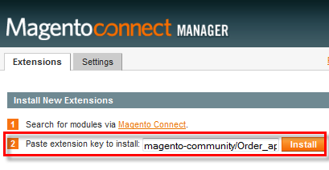
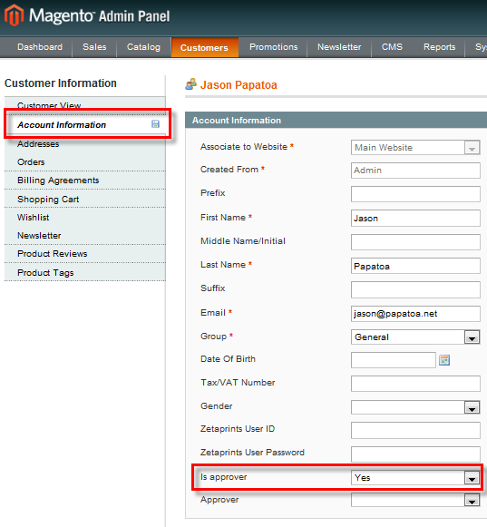
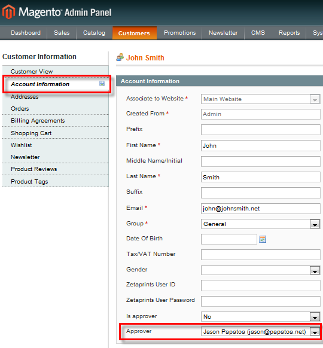
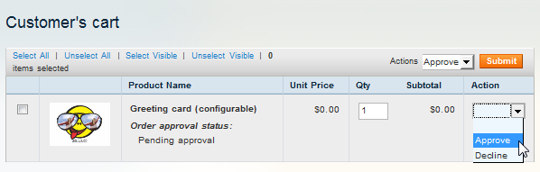

<?xml version="1.0" encoding="UTF-8"?><rss version="2.0"
	xmlns:content="http://purl.org/rss/1.0/modules/content/"
	xmlns:wfw="http://wellformedweb.org/CommentAPI/"
	xmlns:dc="http://purl.org/dc/elements/1.1/"
	xmlns:atom="http://www.w3.org/2005/Atom"
	xmlns:sy="http://purl.org/rss/1.0/modules/syndication/"
	xmlns:slash="http://purl.org/rss/1.0/modules/slash/"
	>

<channel>
	<title>Extension &#8211; Magento web-to-print &amp; dynamic imaging</title>
	<atom:link href="http://www.zetaprints.com/magentohelp/tag/extension/feed/" rel="self" type="application/rss+xml" />
	<link>http://www.zetaprints.com/magentohelp</link>
	<description>Just another WordPress site</description>
	<lastBuildDate>Fri, 07 Jun 2013 06:55:21 +0000</lastBuildDate>
	<language>en-US</language>
	<sy:updatePeriod>hourly</sy:updatePeriod>
	<sy:updateFrequency>1</sy:updateFrequency>
	<generator>https://wordpress.org/?v=4.4.1</generator>
	<item>
		<title>Order approval extension</title>
		<link>http://www.zetaprints.com/magentohelp/magento-order-approval/</link>
		<pubDate>Mon, 04 Oct 2010 12:43:34 +0000</pubDate>
		<dc:creator><![CDATA[admin]]></dc:creator>
				<category><![CDATA[Order approval plugin]]></category>
		<category><![CDATA[Approval]]></category>
		<category><![CDATA[Extension]]></category>

		<guid isPermaLink="false">http://www.zetaprints.com/help/?p=10609</guid>
		<description><![CDATA[Our Order Approval extension allows you to organize an approval process in a Magento store and prevent certain customers from checking out until their orders are approved by a nominated approver. Installation Get the installation key from extension page on Magento eCommerce, paste it in the corresponding field of Magento Connect Manager and hit Install. Create [&#8230;]]]></description>
				<content:encoded><![CDATA[<p>Our <a title="Magento order approval extension" href="https://www.magentocommerce.com/magento-connect/order-approval.html" target="_self">Order Approval extension</a> allows you to organize an approval process in a <a title="Magento ecommerce" href="http://www.magentocommerce.com/" target="_self">Magento</a> store and prevent certain customers from checking out until their orders are approved by a nominated approver.</p>
<p><span id="more-10609"></span></p>
<h2>Installation</h2>
<div style="display: table;">
<p></p>
<div style="position: relative; top: 15px; display: inline;">Get the installation key from <a title="Magento order approval extension" href="https://www.magentocommerce.com/magento-connect/order-approval.html" target="_self">extension</a> page on Magento eCommerce, paste it in the corresponding field of <em>Magento Connect Manager</em> and hit <strong>Install.</strong></div>
</div>
<h2>Create approvers</h2>
<p>The approval process is managed by <strong>approvers</strong> &#8211; a customer nominated as an approver:</p>
<ol>
<li>Navigate to <em>Customers / Manage Customers</em> page in Magento admin panel</li>
<li>Click on the customers name.</li>
<li>Activate <em>Account Information</em> tab</li>
<li>Choose <strong>Yes</strong> for the <strong>Is approver</strong> field</li>
</ol>
<p></p>
<h2>Assign approvers</h2>
<p>An approver can be assigned to any registered user. All orders of a user with an approver assigned will require an approval before going to the checkout.</p>
<ol>
<li>Navigate to the <em>Account Information</em> tab of a customer to be put under approval process</li>
<li>Choose an approver from <strong>Approver</strong> drop-down</li>
</ol>
<p></p>
<h2>Check out and approval process</h2>
<p>The approval process sits between customer&#8217;s shopping cart and the checkout process. It means that customers are able to add any number of products into their shopping cart, delete and modify them at any time without any restrictions, but they can not checkout products from the cart before they are approved.</p>
<p>When customers try to checkout their shopping cart, the approver receives a <a title="Magento order approval notification email" href="../../../order-approval-notification-email/" target="_self">notification</a> about unapproved products in the customer&#8217;s shopping cart. The approver can use the link from the e-mail to reach order approval UI and approve or decline customer&#8217;s products.</p>
<p></p>
<p>Customers can check approval status for every product in their shopping cart and are allowed to checkout items that have already been approved.</p>
<h2>Compatibility</h2>
<p>Our Order approval extension for Magento is fully compatible with our <a title="Magento web-to-print extension" href="../../../magento/" target="_self">web-to-print</a> and <a title="Magento access control extension" href="../../../magento-access-control-for-dynamic-imaging/" target="_self">category access control</a> extensions out of the box.</p>
<p><strong>Note.</strong> The order approval process does not work on <em>Configurable</em> products. Customers placing orders on a configurable product will be able to checkout without waiting for their orders to be approved.</p>
<h2>Links</h2>
<ul>
<li><a title="Magento order approval extension overview" href="../../../../magento-web-to-print/magento-order-approval/" target="_self">Extension overview</a></li>
<li><a title="Order approval extension source code" href="http://code.google.com/p/magento-w2p/source/browse/#svn/branches/ZetaPrints_OrderApproval" target="_self">Source code</a></li>
<li><a title="Order approval extension issue list" href="http://code.google.com/p/magento-w2p/issues/list" target="_self">Issues</a></li>
</ul>
]]></content:encoded>
			</item>
		<item>
		<title>Get started</title>
		<link>http://www.zetaprints.com/magentohelp/magento/</link>
		<pubDate>Mon, 12 Apr 2010 13:38:00 +0000</pubDate>
		<dc:creator><![CDATA[admin]]></dc:creator>
				<category><![CDATA[Overview]]></category>
		<category><![CDATA[Ecommerce]]></category>
		<category><![CDATA[Extension]]></category>
		<category><![CDATA[Online store]]></category>

		<guid isPermaLink="false">/help/?p=9281</guid>
		<description><![CDATA[Magento is a powerful e-commerce platform for building online stores. We created an open source extension to bring the power of ZetaPrints dynamic imaging and web-to-print back-end to any Magento store. Running a Magento store requires technical expertise or assistance of IT professionals. This page is a basic overview of our web-to-print solution for Magento. [&#8230;]]]></description>
				<content:encoded><![CDATA[<p>Magento is a powerful e-commerce platform for building online <a title="Web-to-print storefront" href="../../../../printers/web-to-print-storefront/" target="_self">stores</a>. We created an open source extension to bring the power of ZetaPrints <a title="Dynamic imaging" href="../../../../category/dynamic-imaging/" target="_self">dynamic imaging</a> and <a title="Web-to-print service" href="../../../../category/web-to-print-software/" target="_self">web-to-print</a> back-end to any Magento store. <span id="more-9281"></span></p>
<p>Running a Magento store requires technical expertise or assistance of IT professionals. This page is a basic overview of our web-to-print solution for Magento.</p>
<table style="border: none; border-spacing: 3px; margin: 0px; margin-left: -13px;" border="0">
<tbody>
<tr>
<td style="width: 300px; height: 50px; background-repeat: no-repeat; padding-left: 65px; padding-top: 10px; font-weight: bold; background-image: url('../../../wp-content/magento_icons/demo.png');">Watch a <a href="../../../wp-content/magento_demo/magento_demo.html">video presentation</a></td>
<td style="width: 300px; height: 50px; background-repeat: no-repeat; padding-left: 65px; padding-top: 10px; font-weight: bold; background-image: url('../../../wp-content/magento_icons/api_key.png');"><a href="../../../../help/how-to-get-api-key/">Get an API key</a>, <a href="../../../zetaprints-synchronization-settings/">configure</a> w2p extension</td>
</tr>
<tr>
<td style="width: 300px; height: 50px; background-repeat: no-repeat; padding-left: 65px; padding-top: 10px; font-weight: bold; background-image: url('../../../wp-content/magento_icons/printer_signup.png');"><a href="../../../../printers/web-to-print-sign-up/">Sign up</a> for ZetaPrints printer account</td>
<td style="width: 300px; height: 50px; background-repeat: no-repeat; padding-left: 65px; padding-top: 10px; font-weight: bold; background-image: url('../../../wp-content/magento_icons/create_template.png');"><a href="../../../../help/category/template-preparation/">Create templates</a>, <a href="../../../../help/upload-your-first-template/">upload to ZP</a> and <a href="../../../../help/test-your-template/">test</a></td>
</tr>
<tr>
<td style="width: 300px; height: 50px; background-repeat: no-repeat; padding-left: 65px; padding-top: 10px; font-weight: bold; background-image: url('../../../wp-content/magento_icons/subdomain.png');">Get a <a href="../../../../help/domain-name-set-up/">subdomain</a>, link to ZP, login to claim it</td>
<td style="width: 300px; height: 50px; background-repeat: no-repeat; padding-left: 65px; padding-top: 10px; font-weight: bold; background-image: url('../../../wp-content/magento_icons/import_template.png');"><a href="../../../import-data/">Import templates</a> into Magento</td>
</tr>
<tr>
<td style="width: 300px; height: 50px; background-repeat: no-repeat; padding-left: 65px; padding-top: 10px; font-weight: bold; background-image: url('../../../wp-content/magento_icons/instal_magento.png');"><a href="http://www.magentocommerce.com/knowledge-base/entry/magento-installation-guide">Instal Magento</a></td>
<td style="width: 300px; height: 50px; background-repeat: no-repeat; padding-left: 65px; padding-top: 10px; font-weight: bold; background-image: url('../../../wp-content/magento_icons/conf_prices.png');">Configure <a href="../../../../help/prices-and-payments/">prices</a>, <a href="../../../magento-access-control-for-dynamic-imaging/">access control</a>, etc</td>
</tr>
<tr>
<td style="width: 300px; height: 50px; background-repeat: no-repeat; padding-left: 65px; padding-top: 10px; font-weight: bold; background-image: url('../../../wp-content/magento_icons/instal_w2p.png');"><a href="../../../instal-guide/">Install</a> web-to-print <a href="https://www.magentocommerce.com/magento-connect/web-to-print-and-dynamic-imaging.html">extension</a></td>
<td></td>
</tr>
</tbody>
</table>
<h2>Express demo installation</h2>
<p>Want to quickly try our <a title="Magento web-to-print extension page" href="https://www.magentocommerce.com/magento-connect/web-to-print-and-dynamic-imaging.html" target="_self">web-to-print extension</a> for Magento in your online store? Follow these <a title="Quick demo install of web-to-print extension" href="../../../web-to-print-demo-installation-on-magento/">express installation steps</a> and end up with a web-to-print enabled Magento store connected to a demo ZetaPrints account.</p>
<h2>Installation steps</h2>
<ol class="listzp">
<li><a title="Web-to-print extension prerequisites" href="../../../web-to-print-extension-prerequisites/" target="_self">Prerequisites</a></li>
<li><a title="Install Magento" href="../../../install-magento/" target="_self">Install Magento, if not already installed</a></li>
<li><a title="Install web-to-print extension for Magento" href="../../../web-to-print-magento-install/" target="_self">Install the web-to-print extension for Magento</a></li>
<li><a title="Web-to-print Magento theme" href="../../../web-to-print-magento-theme/" target="_self">Configure the default theme</a></li>
<li><a title="Clear Magento cache and refresh your session" href="../../../clear-magento-cache/" target="_self">Clear Magento cache</a></li>
<li><a title="Web-to-print Magento configuration" href="../../../zetaprints-synchronization-settings/" target="_self">Configure web-to-print synchronization settings</a></li>
<li><a title="Import web-to-print data" href="../../../import-web-to-print-data/" target="_self">Import templates from ZetaPrints catalogs</a></li>
<li><a title="Simple web-to-print products in magento" href="../../../create-simple-web-to-print-products/">Create simple products from the imported templates</a></li>
<li><a title="Sign up a printer account with ZetaPrints" href="../../../register-a-master-account/" target="_self">Register a master account</a></li>
<li><a title="Set up a custom domain name" href="../../../set-up-your-domain/" target="_self">Set up your custom domain</a></li>
<li><a title="Configure Magento product attributes" href="../../../configure-product-attributes/" target="_self">Configure product attributes</a></li>
</ol>
<div class="all_topics_link"><a title="View all web-to-print Magento topics" href="../../../" target="_self">All topics</a></div>
<h2>Access control</h2>
<p>There are 2 different modes you can use in the ZetaPrint extension for Magento:</p>
<ul class="listing">
<li>a public site and</li>
<li>a corporate site</li>
</ul>
<p>A corporate site requires access control. This feature is available in Magento <a title="compare editions" href="http://www.magentocommerce.com/product/compare">Enterprise Edition</a>. We also created a simple <a title="Magento access control" href="https://www.magentocommerce.com/magento-connect/category-access-control.html">extension for access control</a> to help you get it going before upgrading to Enterprise Edition.</p>
<p>Extension support and questions: <a href="mailto:support@zetaprints.com">support@zetaprints.com</a></p>
]]></content:encoded>
			</item>
	</channel>
</rss>

<!-- Localized -->